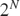
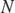
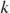

vecEspresso User Guide
The function vecEspresso is a wrapper of the function matEspresso (itself a wrapper of Espresso executable). It is largely compatible with minTruthtable while leveraging Espresso's superior performance on large problems (i.e. many minterms or independent variables).
vecEspresso accepts a truth-vector (a vector representing all possible combinations of Boolean variables) and returns minimized covering patterns. This interface matches minTruthtable's core functionality while using a more efficient minimization algorithm. However, vecEspresso does construct the entire binary truth table and thus is intended for dense vectors. For sparse problems, where only selected minterms or cubes need to be specified, call matEspresso directly instead: this avoids creating the entire truth table.
Refer to the matEspresso documentation for details on obtaining, installing, and configuring the Espresso executable.
Contents
- Terminology
- Truth-Vector Format
- Input: Text
- Input: Numeric or Logical
- Don't-Care Values
- Don't-Care Preservation
- Larger Truth-Vectors
- Using Espresso Options
- No-Output Display Mode
- Output 1: Bins
- Output 2: inps
- Output 3: Nums
- Output 4: ott
- Output 5: expr
- Output 6: debug
- Interesting Edge-Cases
- Espresso vs. Quine-McCluskey
- minTruthtable Compatibility
- When Results Differ from minTruthtable
- Example: Large Truth-Table Performance
Terminology
Terms commonly used in PLA contexts are easily confused with existing terms used in MATLAB that have very different meanings. For that reason we define the following two universal terms in place of the confusing ones:
- "independent-variable" aka input, variable, argument, premise, predicate, condition, domain variable, input signal, etc.
- "dependent-variable" aka output, function, function value, consequent, result, response, target variable, output signal, etc.
Truth-Vector Format
A truth-vector is a vector of length

that specifies the dependent-variable value for every combination of
independent- variables. Zero-based index
gives the dependent-variable value (true, false, or don't-care/DC) when the independent-variables are the -bit binary representation of , in binary counting order.For example, a 4-element truth-vector has two independent-variables:
tt = '1010' tt ↓
k=0 -> binary 00 -> defined as true '1' k=1 -> binary 01 -> defined as false '0' k=2 -> binary 10 -> defined as true '1' k=3 -> binary 11 -> defined as false '0'
The binary columns are ordered from the most significant bit to the least significant bit, i.e. MSB -> LSB. Independent-variable names correspond to columns from left to right. For example, with three independent-variables named A, B, and C:
- Column order in patterns: A B C
- Bit significance: MSB to LSB
- Binary counting: 0=000, 1=001, 2=010, 3=011, 4=100, ... k=MSB:LSB ...
Input: Text
The truth-vector may be a character vector or a string scalar, the permitted characters are:
false: '0'
true: '1'
DC: '2' == '-' == '?'
The outputs are explained in detail below, and here briefly:
- Bins: the covering patterns
- inps: the logical gate complexity of the minimized output
- Nums: which truth-table positions each pattern covers (0-indexed)
- ott: the minimized output truth-vector
- expr: a Boolean expression of the minimized output
- debug: information about the function evaluation
For example, a 2-independent-variable function that is true at positions 1 and 3:
[Bins,inps,Nums,ott,expr] = vecEspresso('0101')
Bins =
'-1'
inps =
0
Nums =
1×1 cell array
{[1 3]}
ott =
'0101'
expr =
'Z = B'
Input: Numeric or Logical
Numeric and logical vectors are accepted using these values:
false: 0 == false
true: 1 == true
DC: 2
For example, a 2-independent-variable function that is true at positions 1 and 3:
[BinsN,inpsN,NumsN,ottN] = vecEspresso([0,1,0,1]) [BinsL,inpsL,NumsL,ottL] = vecEspresso([false,true,false,true])
BinsN =
1×2 int8 row vector
2 1
inpsN =
0
NumsN =
1×1 cell array
{[1 3]}
ottN =
1×4 int8 row vector
0 1 0 1
BinsL =
1×2 int8 row vector
2 1
inpsL =
0
NumsL =
1×1 cell array
{[1 3]}
ottL =
1×4 int8 row vector
0 1 0 1
Don't-Care Values
Don't-care (DC) values indicate positions where the function value is unspecified. A DC may be included in a product term when that helps to simplify the expression. By default, vecEspresso resolves every input DC to true/false according to the value of the selected expression at that position.
In this example the output ott resolves the DCs (at zero-based indices 2 & 3) to false and true respectively, producing the simpler single-term result:
[Bins,inps,Nums,ott] = vecEspresso('01--')
Bins =
'-1'
inps =
0
Nums =
1×1 cell array
{[1 3]}
ott =
'0101'
Don't-Care Preservation
The preserveDC option controls whether DCs are resolved or preserved in the output truth-vector ott. Use preserveDC=true when ott must distinguish "known false" from "unspecified" values, such as when iteratively refining a truth table.
In this example ott preserves the original DC positions unconditionally: covered non-DC positions are set to true, while DC positions are always left unchanged regardless of coverage. Inspect Nums to determine which DC indices are covered by the selected product terms:
[Bins,inps,Nums,ott] = vecEspresso('01--', 'preserveDC',true)
Bins =
'-1'
inps =
0
Nums =
1×1 cell array
{[1 3]}
ott =
'01--'
Larger Truth-Vectors
vecEspresso supports larger truth-vectors compared to minTruthtable, making it suitable for problems with many independent-variables. For example, 4-independent-variables:
[Bins,inps,Nums,ott] = vecEspresso('0000100110001000')
Bins =
3×4 char array
'0111'
'1-00'
'-100'
inps =
13
Nums =
3×1 cell array
{[ 7]}
{[8 12]}
{[4 12]}
ott =
'0000100110001000'
Using Espresso Options
All remaining options are passed directly to matEspresso, please see the matEspresso documentation for complete option descriptions. For example, to request Espresso's exact minimization mode:
[Bins,inps,Nums,ott] = vecEspresso('0101', 'Dexact',true)
Bins =
'-1'
inps =
0
Nums =
1×1 cell array
{[1 3]}
ott =
'0101'
No-Output Display Mode
When called without output arguments, vecEspresso displays a formatted summary including a Karnaugh map (for 3-4 independent-variables), all covering terms, the Boolean expression, and the complexity metric:
vecEspresso('01011010')
| Karnaugh map (index to left, -:unused don't-care, =:used don't-care):
| / 0 1 3 2 \ | / . 1 1 . \
| \ 4 5 7 6 / | \ 1 . . 1 /
| All terms:
| * T( 1): "1-0" <-> {4 6}
| * T( 2): "0-1" <-> {1 3}
|
| Z = (A & ~C) | (~A & C);
|
| Logical complexity: 6 inputs
|
| Input tt: "01011010"
| Output tt: "01011010"
Output 1: Bins
The Bins output contains the covering patterns as a character matrix (for char/string input) or int8 matrix (for numeric/logical input). Each row represents one product term in the minimized expression.
The values in Bins are:
- '0' or 0: independent-variable must be false
- '1' or 1: independent-variable must be true
- '-' or 2: independent-variable is not constrained (don't care / DC)
Column 1 is the most significant independent-variable, i.e. the MSB of the binary number. Independent-variable names correspond to columns from left to right. For a 4-independent-variable function:
Name: A B C D Column: 1 2 3 4 Weight: 8 4 2 1
Pattern: '1010' -> A=1, B=0, C=1, D=0.
Bins = vecEspresso('0000111100110011')
Bins =
2×4 char array
'01--'
'1-1-'
Output 2: inps
The inps output estimates the number of logic gate-inputs required for a two-level sum-of-products implementation, using the same metric as minTruthtable. To provide a rough measure of PLA-circuit implementation complexity it counts:
- The number of literals in multi-literal product terms (`AND` gate-inputs),
- One gate-input per product term for the `OR` gate (if 2+ terms exist).
This metric estimates PLA-circuit implementation complexity. Lower inps values indicate simpler logic circuits requiring fewer connections. Single literal terms and constant functions contribute zero.
In this example, pattern '011' has 3 literals, pattern '1-0' has 2 literals, and with 2 patterns we need a 2-input `OR` gate, giving inps=3+2+2=7:
[Bins,inps] = vecEspresso('00011010')
Bins =
2×3 char array
'011'
'1-0'
inps =
7
Output 3: Nums
The Nums output connects each product term in Bins to the input truth-vector tt. Nums{k} contains the zero-based truth-table indices covered by Bins(k,:), including any covered DC indices. This connection between patterns and covered positions is useful for:
- Verifying complete coverage of all true positions
- Identifying the independent-variable combinations covered by each term,
- Identifying which input DCs have been absorbed,
- Investigating unexpected minimization results.
Remember to add 1 when using these indices with the MATLAB vector tt.
In this example Bins(1,:)='1-' covers truth-table positions 2 and 3 i.e. Nums{1} = [2,3] (0-indexed), corresponding to tt(3) and tt(4):
[Bins,inps,Nums] = vecEspresso('0011')
Bins =
'1-'
inps =
0
Nums =
1×1 cell array
{[2 3]}
Output 4: ott
The ott output is the reconstructed truth-vector showing which positions are covered by the minimized expression. By default, DCs are consumed (i.e. are set to '0' or '1'):
[Bins,inps,Nums,ott] = vecEspresso('01--1001')
Bins =
3×3 char array
'100'
'0-1'
'-11'
inps =
10
Nums =
3×1 cell array
{[ 4]}
{[1 3]}
{[3 7]}
ott =
'01011001'
Output 5: expr
A character vector containing one Boolean expression (see matEspresso):
[~,~,~,~,expr] = vecEspresso('01--1001')
expr =
'Z = (A & ~B & ~C) | (~A & C) | (B & C)'
Output 6: debug
A scalar structure containing diagnostic information (see matEspresso):
[~,~,~,~,~,debug] = vecEspresso('0110') debug.time % Timing information
debug =
struct with fields:
raw: [1×1 struct]
options: [1×1 struct]
time: [1×1 struct]
system: [1×1 struct]
ans =
struct with fields:
Espresso: 0.05621
matEspresso: 0.05902
vecEspresso: 0.061062
Interesting Edge-Cases
[~,~,~,ott] = vecEspresso('1111') % Constant-true function, output remains true [~,~,~,ott] = vecEspresso('0000') % Constant-false function, output remains false [~,~,~,ott] = vecEspresso('----') % DCs treated as all false (conservative) [~,~,~,ott] = vecEspresso('--00') % DCs consumed as false when not needed
ott =
'1111'
ott =
'0000'
ott =
'0000'
ott =
'0000'
Espresso vs. Quine-McCluskey
vecEspresso uses Espresso, whereas minTruthtable uses a Quine-McCluskey implementation. The default vecEspresso minimization is heuristic. minTruthtable uses exact minimization for truth-vectors of up to 32 elements by default, then selects progressively quicker heuristics for larger truth-vectors. Its 'e' flag requests exact minimization explicitly.
Performance
- vecEspresso generally scales better for large truth-vectors.
- minTruthtable is often convenient and competitive for small truth-vectors, especially when exact minimization is required.
Don't-Care Handling
- vecEspresso tends to leave DC indices uncovered unless they help reduce the selected expression,
- minTruthtable tends to merge more DC indices into larger product terms. The covered DC indices are included in Nums and are returned as true in ott (unless preserveDC=true).
For example, the following truth-vector produces different values at the DC positions, even though both results preserve all true/false values:
tt = '011-01-0';
[~,~,~,ottM] = minTruthtable(tt)
[~,~,~,ottE,exprE] = vecEspresso(tt)
ottM =
'01110100'
ottE =
'01100110'
exprE =
'Z = (B & ~C) | (~B & C)'
minTruthtable Compatibility
vecEspresso is a largely compatible replacement for minTruthtable, with some key differences.
vecEspresso supports:
- Core minTruthtable functionality (truth-vector minimization),
- The first four outputs (Bins, inps, Nums, ott),
- Input tt may be character, string, numeric, or logical.
The output class of Bins and ott match the input class where practical:
- tt numeric/logical vector -> output int8 vector (using values 0, 1, and 2),
- tt char vector or string scalar -> output same class (using '0', '1', and '-'),
- Note that minTruthtable always returns char regardless of input class.
- DCs in numeric/logical tt must be exactly value 2 (not just non-zero/non-one values as minTruthtable permits).
vecEspresso does not support:
- minTruthtable optimization flags ('e', 'Q', 'q', numeric levels),
- Verification flag 'v'.
vecEspresso additional features:
- 'preserveDC' option to control don't-care (DC) handling,
- matEspresso options (e.g. 'Dexact', 'Efast', etc., excluding 'Eout'),
- Fifth output expr with Boolean expression,
- Sixth output debug with diagnostic information,
- Supports numeric, logical, and string classes for input & output.
vecEspresso performance:
- Generally faster for problems with 10+ independent-variables,
- Input is not limited to 2^15 elements,
- Uses heuristic minimization strategies.
When to use vecEspresso:
- Working with >10 independent-variables,
- Truth tables larger than 2^15 elements,
When to use matEspresso:
- Working with truth tables in matrix/table form.
- Working with very sparse truth tables (few true positions).
When to use minTruthtable:
- Working with <=10 independent-variables,
- Truth tables smaller than 2^15 elements,
- Need guaranteed optimal solution (use with 'e' flag),
- Prefer Quine-McCluskey's aggressive DC absorption,
- Want to verify results against a different algorithm.
When Results Differ from minTruthtable
vecEspresso and minTruthtable may produce different valid forms when:
- Heuristic minimization selects a different expression,
- Multiple expressions have the same measured complexity,
- DCs permit different product terms or different covered DC indices,
- Tie-breaking choices differ between the algorithms.
Both functions preserve every specified true and false value. Compare inps for their logical-complexity metric, and compare Nums or ott when the practical difference is which DC indices are covered.
vecEspresso is generally preferable for large truth-vectors and tends to leave DC indices uncovered unless they help reduce the selected expression. minTruthtable is often preferable for small truth-vectors, supports explicit exact minimization with the 'e' flag, and tends to merge more DC indices into larger product terms.
Consider the truth-vector from the section "Espresso vs. Quine-McCluskey". The two functions may select different product terms and may cover different DC indices. Compare Bins to see the selected product terms, Nums to see every zero-based index covered by each term, and ott to see which DC indices were covered. Add 1 to a value from Nums when using it to index the MATLAB vector tt.
With the reference Espresso executable, vecEspresso returns the product terms '-10' and '-01' for this example. Their covered indices are {2,6} and {1,5}, so DC index 6 is covered and DC index 3 is not. The resulting truth-vector is ottE='01100110'.
[BinsM,inpsM,NumsM,ottM] = minTruthtable(tt) [BinsE,inpsE,NumsE,ottE] = vecEspresso(tt)
BinsM =
2×3 char array
'-01'
'01-'
inpsM =
6
NumsM =
2×1 cell array
{[1 5]}
{[2 3]}
ottM =
'01110100'
BinsE =
2×3 char array
'-10'
'-01'
inpsE =
6
NumsE =
2×1 cell array
{[2 6]}
{[1 5]}
ottE =
'01100110'
Example: Large Truth-Table Performance
vecEspresso can process larger problems that would be impractical for minTruthtable by using Espresso's heuristic minimization. However, vecEspresso constructs the entire binary truth table and is therefore intended for dense truth-vectors.
For example, a 17-independent-variable truth-table (131072 elements):
tt = repmat('0', 1, 2^17); % 17 independent-variables tt([1, 123, 1234, 12345, 54321]) = '1'; % 5 true minterms tic [Bins, inps, Nums, ott] = vecEspresso(tt); toc
Elapsed time is 1.432592 seconds.